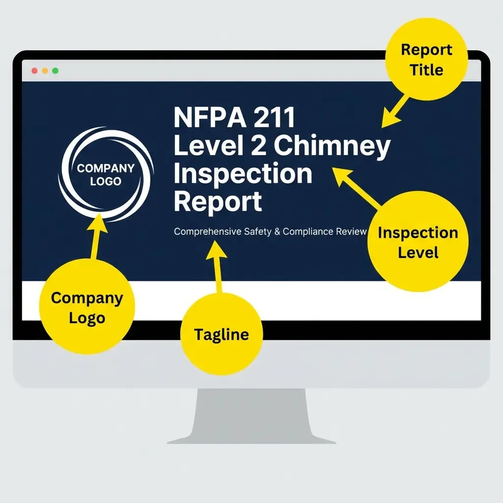
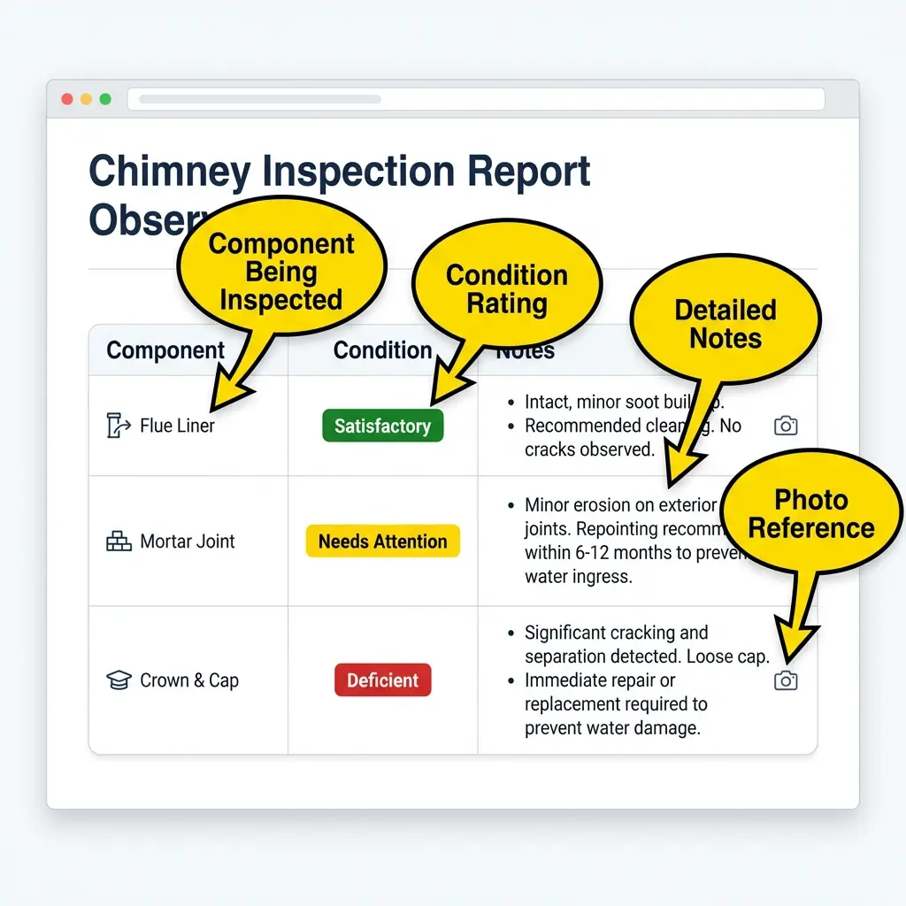
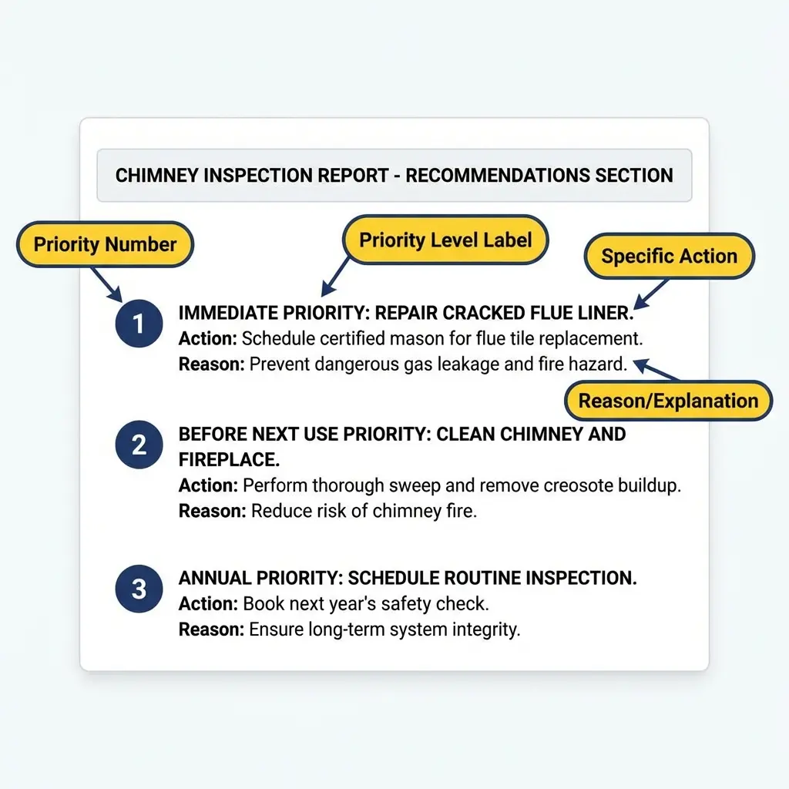

Table of Contents
Introduction & Purpose
A chimney inspection report serves multiple purposes: it documents the current condition of the chimney system, provides a record for insurance and legal purposes, and communicates findings to clients in a clear, professional manner.
Why This Matters: Every section of your report should serve a specific purpose. Random information or poorly organized content can undermine your credibility and create liability issues.
Key Goals of Professional Documentation
- Establish a clear record of inspection scope and limitations
- Document findings with supporting evidence (photos, measurements)
- Provide actionable recommendations for the client
- Protect the inspector through proper disclaimer language
- Maintain compliance with industry standards (NFPA 211, CSIA)
Report Header & Inspection Details
The header establishes the essential "who, what, when, where" of the inspection. This information should be immediately visible at the top of every report.
What Goes Here: Company logo, report title, property address, inspection date, client name, and unique report identifier.
Example Header Information
Pro Tip: Use a consistent report numbering system (e.g., Level-Year-MMDD or sequential numbers) to easily track and reference reports.
System Description Section
This section describes the chimney system being inspected. It sets the context for all findings and helps clarify what was actually evaluated.
What Goes Here: Appliance type, fuel type, venting method, flue count, chimney construction type, and chimney location (interior/exterior).
Example System Configuration
| Appliance Type: | [Masonry Fireplace / Wood Stove / Gas Insert / etc.] |
| Fuel Type: | [Solid Fuel / Natural Gas / Oil / etc.] |
| Venting Method: | [Natural Draft / Direct Vent / Power Vent] |
| Flue Liner Type: | [Clay Tile / Stainless Steel / Unlined] |
| Chimney Location: | [Interior / Exterior] |
Important: Be specific about the liner type. This affects future recommendations and code compliance determinations.
Observations & Findings
The findings section is the core of the report. It documents what was observed during the inspection, organized by area or component.
What Goes Here: Condition ratings for each inspected area, specific observations, and supporting notes. Use consistent rating terminology (Satisfactory, Needs Attention, Deficient).
Example Findings Table
| Component | Condition | Notes |
|---|---|---|
| Chimney Crown | Satisfactory | [Specific observations] |
| Flue Liner | Needs Attention | [Specific observations with photos referenced] |
| Smoke Chamber | Satisfactory | [Specific observations] |
Pro Tip: Always reference photo numbers in your notes (e.g., "See Photo 3"). This creates a clear link between written observations and visual evidence.
Defect Documentation Examples
When defects are found, they require detailed documentation including the nature of the defect, its location, severity, and recommended action.
What Goes Here: Specific defect descriptions, severity classifications, affected areas, and cross-references to photos and recommendations.
Example Defect Categories
✓ Satisfactory
Component meets applicable standards and shows no visible defects or concerns.
⚠ Needs Attention
Minor issues that should be addressed but do not present an immediate safety hazard.
✗ Deficient
Significant issues requiring immediate attention. System should not be used until repaired.
Limitations & Conditions
Document any areas that could not be fully inspected and the reasons why. This protects both the inspector and client by setting clear expectations.
What Goes Here: Specific areas with limited access, reasons for limitations, and impact on inspection completeness.
Example Limitations Table
Areas Not Accessible / Limited Access
| Area | Reason | Impact |
|---|---|---|
| [Area Name] | [Specific reason for limitation] | [How this affects the inspection] |
Important: Never claim to have inspected areas you couldn't access. Be specific about what was and wasn't visible.
Recommendations & Next Steps
Clear, actionable recommendations help clients understand what needs to be done and in what priority order.
What Goes Here: Prioritized list of recommended actions, timeframes where appropriate, and explanations of why each action is needed.
Example Recommendations Format
- [Immediate] Description of urgent recommendation and why it's important.
- [Before Next Use] Description of work that should be completed before operating the system.
- [Annual Maintenance] Description of ongoing maintenance recommendations.
Pro Tip: Use clear priority language (Immediate, Before Next Use, Seasonal, Annual) to help clients understand urgency.
Disclaimers & Scope Clarifiers
Proper disclaimer language protects the inspector by clearly defining what the inspection does and does not include.
What Goes Here: Inspection scope limitations, standards referenced, statement about point-in-time conditions, and liability limitations.
Example Disclaimer Content
This inspection is limited to readily accessible and visible components at the time of inspection. Concealed conditions, underground components, or areas requiring destructive investigation are beyond the scope of this report.
This report is prepared in accordance with [NFPA 211 / CSIA standards] and represents the condition of the chimney system at the time of inspection. Future conditions may vary due to use, weather, or other factors.
Level 3 Inspection Boundary
This inspection does not include destructive testing or concealed structural analysis. Conditions requiring demolition, removal of finishes, or invasive testing fall under a Level 3 inspection.
Photo Documentation
Photos provide visual evidence supporting your findings. Each photo should be clearly labeled and referenced in the report text.
What Goes Here: Numbered photos with descriptive captions, organized by section or component.
Example Photo Grid



Pro Tip: Include reference photos showing measurements (like a ruler or tape measure in frame) when documenting clearances or defect sizes.
Inspector Certification & Signature
The signature block establishes the inspector's credentials and formally certifies the report.
What Goes Here: Inspector name, certification numbers, company information, date, and signature line.
Example Signature Block
Inspector Name: [Full Name], [Certifications]
Certification Number: [CSIA/NFI Number]
Company: [Company Name]
Date: [Report Date]
Software Adaptation Notes
When adapting this template for inspection software, consider these implementation notes.
What Goes Here: Notes on customizing templates for specific software platforms, field types, and automation opportunities.
Common Adaptation Considerations
- Create dropdown fields for condition ratings (Satisfactory, Needs Attention, Deficient)
- Add photo upload fields with automatic numbering
- Include date/time stamps for each section
- Pre-populate standard disclaimer and limitation language
- Add digital signature capability for certification section
Complete Annotated Example
For a complete example of a filled-out inspection report, see our related documentation:
Frequently Asked Questions
What should be included in a chimney inspection report?
A professional chimney inspection report should include: header information (property address, date, client name), system description (appliance type, fuel type, flue liner), detailed findings for each component, photo documentation, limitations and conditions, recommendations with priority levels, disclaimers, and inspector certification with signature.
What is the difference between Level 1, Level 2, and Level 3 chimney inspections?
Level 1 is a basic visual inspection for chimneys under continued service. Level 2 includes video scanning and inspection of accessible areas, required for property transfers or after events that may have caused damage. Level 3 involves destructive testing and removal of building components to access concealed areas when serious hazards are suspected.
Why is proper documentation important for chimney inspections?
Proper documentation protects both the inspector and client by establishing a clear record of findings, providing evidence for insurance claims, supporting legal defensibility, ensuring compliance with NFPA 211 standards, and creating a reference for future inspections and repairs.
How should I document limitations in a chimney inspection report?
Document each limitation by specifying the area that could not be inspected, the reason for limited access (blocked, unsafe, inaccessible), and the impact on the inspection. Never claim to have inspected areas you couldn't access, and be specific about what was and wasn't visible.
What condition rating system should I use in chimney inspection reports?
Use a consistent three-tier rating system: Satisfactory (meets standards, no defects), Needs Attention (minor issues, not immediate safety concern), and Deficient (significant issues requiring repair before use). Always reference photo numbers in your notes to link observations with visual evidence.